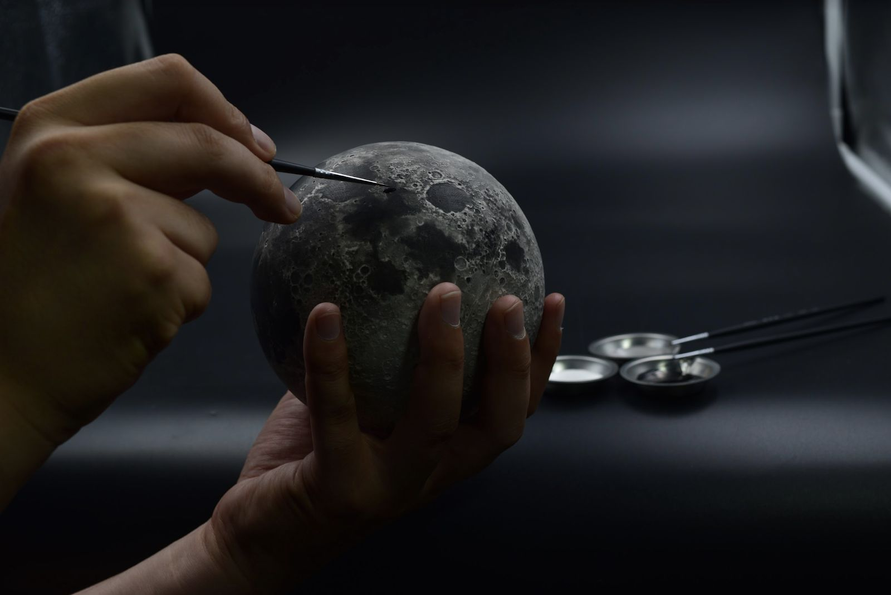
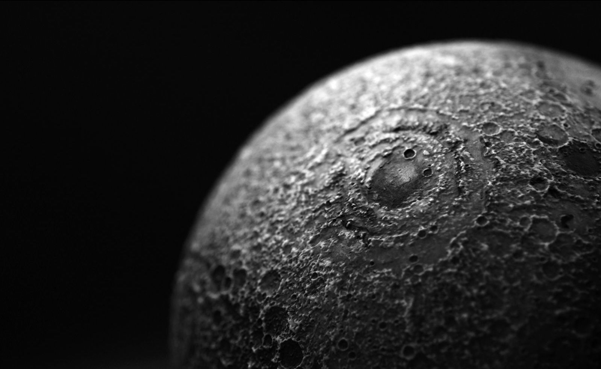
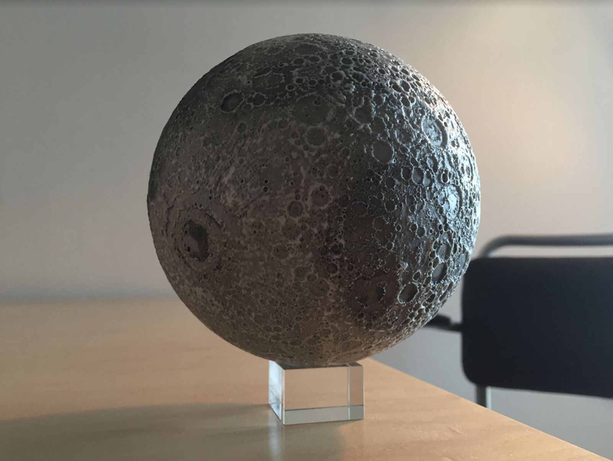

The Lunar Moon has captivated the human imagination throughout history. Though it is ever present, there is so little we know. We wanted to bring the Moon closer, to bring all of our stargazing dreams into reality. Our mission is to inspire as many space lovers as we can, helping to awaken and educate a new generation of astronomy enthusiasts through the power of technology
Printing level height down to 0.05 millimeters Printing error precision of 0.025 millimeters Up to 0.006 millimeters per pixel precision 3D printing accuracy 98%+ modeling accuracy achieved through
Using the most accurate industrial 3D printing technology available today, LUNAR is modeled to 0.006 millimeters per pixel precision, based on data captured by NASA's Lunar Reconnaissance Orbiter.
Using advanced Augmented Reality technology, LUNAR paired with the AstroReality app allows you to learn captivating facts and trivia, simulate Moon missions and embark on personalized lunar adventures from your home or classroom.